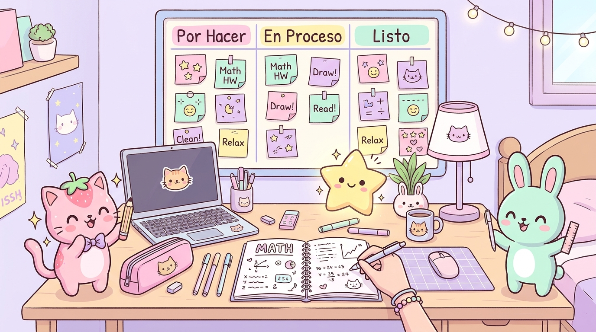
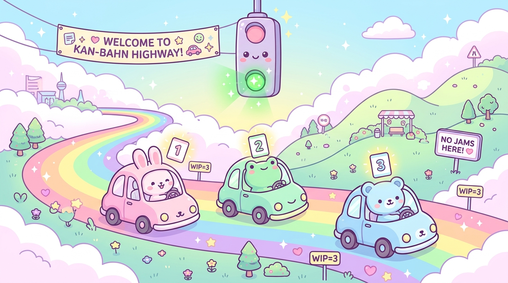
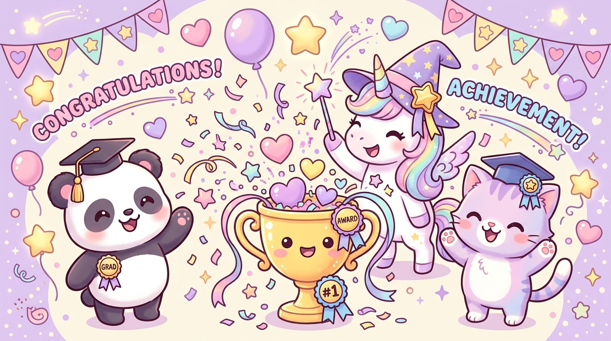

¡Hola! 🎀 Multiplicar números gigantes en tu mente es súper fácil con Fichas Kawaii Kanban
💬 Un secreto importante para ti: Cuando te preguntan cuánto es 1.570.000 × 2 de improviso y sientes que tu mente se queda en blanco, ¡no es porque seas malo o mala para las matemáticas!
En el método Kanban, eso pasa cuando intentamos procesar un trabajo gigante de una sola vez: el cerebro sufre Muri (Sobrecarga Mental). Pero si partes el número en Fichas Kawaii de colores y procesas solo 1 ficha a la vez (Límite WIP = 1), ¡lo sacas al tiro en 3 segundos!

🔗 Explora todas las Salas del Estudio Kawaii (Haz clic en cualquier tarjeta):
Sala 2: Autopista Kan-Bahn
Descubre por qué tu mente se atasca cuando entran 7 números juntos y cómo el semáforo WIP=1 lo soluciona.
Ir a la Autopista ➡️Sala 3: El Reto 1.570.000 × 2
3 formas Kawaii distintas de resolver 1.570.000 × 2 = 3.140.000 al tiro sin papel ni calculadora.
Ver las 3 Estrategias ➡️Sala 4: Video-Estudio con Voz
Reproductor animado de 5 capítulos con narración en voz chilena y subtítulos paso a paso.
Reproducir Video ➡️Sala 5: Tablero Kanban Vivo
Mueve las fichas de colores por Backlog, Listo, Multiplicando (WIP=1) y Hecho, o escribe tus propios números.
Abrir Tablero ➡️Sala 6: 8 Ejemplos Guiados
Colección de ejemplos desde nivel suave hasta decenas de millones con fichas de colores y audio.
Explorar Ejemplos ➡️Sala 7: Pruebas y Desafíos
4 niveles de pruebas interactivas para comprobar cuánto estás aprendiendo y subir tu rango Kawaii.
Empezar Pruebas ➡️La Metáfora «Kan-Bahn»: ¿Por qué nos bloqueamos con números grandes?
Descubre cómo evitar los tacos mentales cuando multiplicas números de 6 o 7 cifras en tu cabeza.
🚦 Tu mente es como una autopista pastel («Kan-Bahn»)
En el método Kanban descubrimos que nuestra mente funciona igual que una autopista en hora punta:
-
💥 Muri (Sobrecarga Mental): Si intentas meter los 7 dígitos de
1.570.000al mismo tiempo a multiplicar en tu cabeza, la autopista se llena al 100% y se arma un taco total. ¡Nadie avanza! - 🎟️ Visualizar con Fichas de Colores: En vez de ver un monstruo de 7 cifras, partimos el trabajo en paquetes chiquititos (fichas de colores): 🍓 Millones, 🍋 Centenas de mil, 🌿 Decenas de mil.
- 🟢 Límite WIP = 1 y Sistema Pull: Ponemos un semáforo en la entrada que solo deja pasar 1 ficha a la vez. Hasta que no terminas de multiplicar esa ficha, no jalas (Pull) la siguiente.

🎮 Simulador Interactivo: Compara tu mente SIN Kanban vs. CON Kanban
Cómo resolver 1.570.000 × 2 = 3.140.000 en 3 segundos
En Kanban siempre empezamos con lo que ya sabemos hacer. ¡Elige cuál de estas 3 formas Kawaii te acomoda más!
Video-Estudio Kawaii: Aprende viendo y escuchando
Presiona ▶️ Reproducir Video Kawaii para ver la animación por capítulos con narración chilena y subtítulos.
Tu Tablero Kanban de Fichas Kawaii (con Límite WIP = 1)
Haz clic en los botones de cada ficha para moverla de izquierda a derecha, o presiona «✨ Resolver Paso a Paso Automático». ¡Intenta meter 2 fichas al mismo tiempo en «Multiplicando» y verás cómo actúa el semáforo WIP!
Ya tienes 1 ficha en la columna «Multiplicando». Recuerda la regla de oro Kanban: «¡Deja de empezar y empieza a terminar!» Termina primero la ficha actual pasándola a «Multiplicado ✅» antes de jalar la siguiente.
Galería de 8 Ejemplos Guiados con Fichas Kawaii
Revisa cómo se descompone cada número grande, escucha la explicación con voz chilena o envíalo con un clic al Tablero Kanban interactivo.
Laboratorio de Pruebas Kawaii
Avanza por los 4 modos de entrenamiento. ¡Cada respuesta correcta mide tu velocidad de respuesta, te da puntos XP y sube tu rango Kawaii!
Tu Evolución y Rangos Kawaii (N0 a N5)
Mira cómo mejora tu velocidad mental a medida que resuelves desafíos con tus Fichas Kawaii.
📊 Tus Estadísticas de Velocidad Mental

🌟 Escalera de Rangos Kawaii Kanban (N0 – N5):
📔 Mi Bitácora de Trucos Mentales
Anotar qué truco te funcionó mejor ayuda a que tu cerebro lo recuerde para siempre: